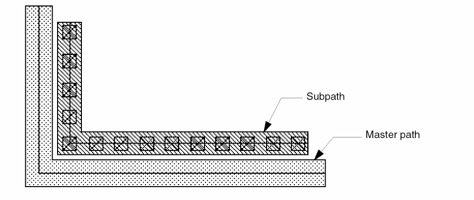
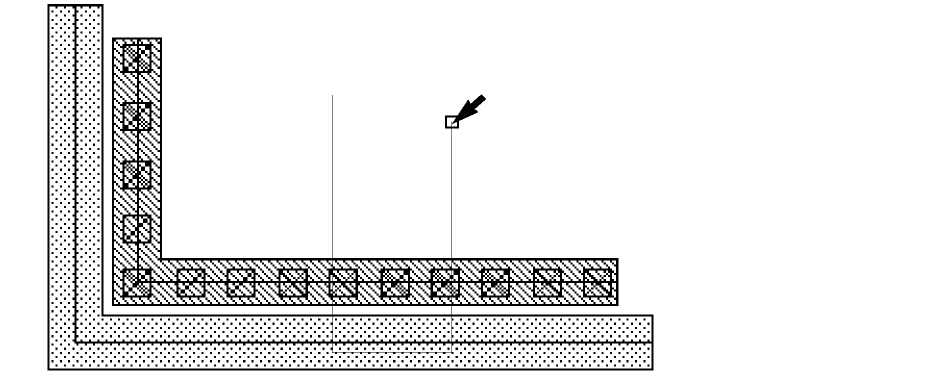
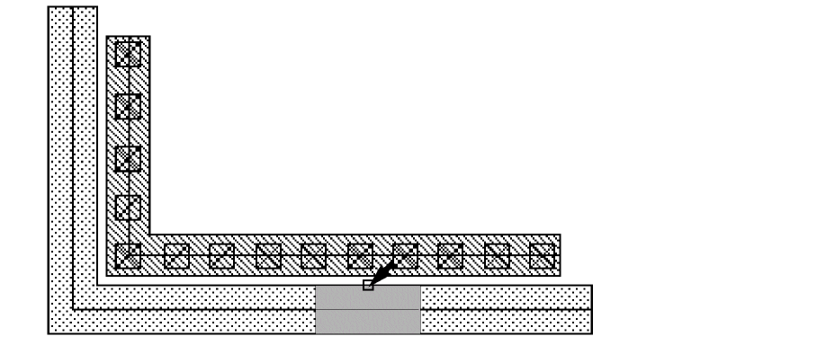
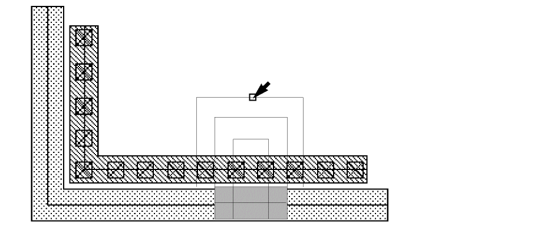
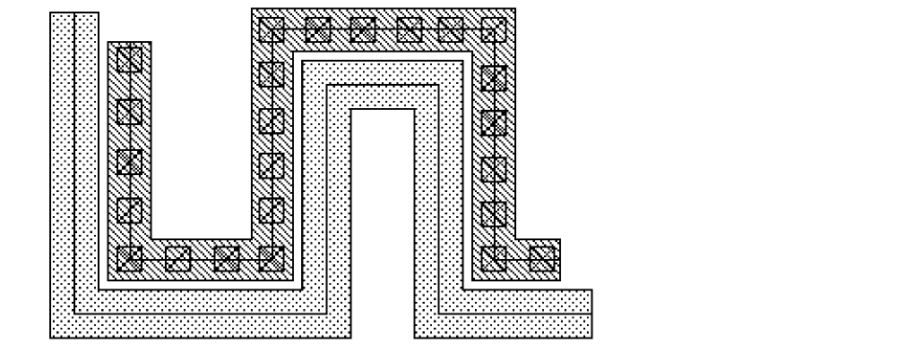

Splitting Multipart Paths
You can add a jog to a section of a multipart path in the same way you add a jog to single-part paths; the jog affects the master path and all of its subparts. You might want to split and stretch a multipart path to direct it around an object or to add new connecting segments.
Any objects aligned with or attached to the part of the multipart path that moves, move with the stretch. You can split paths only in full selection mode.
You cannot split or stretch the master path separately from its subparts, nor can you split or stretch subparts separately from the master path. If you attempt to split a subpart, the system applies the split to the whole multipart path.
To stretch a section of a multipart path segment:
- In the layout window, choose Edit – Advanced – Split.
-
Select the object to be split by clicking anywhere on the multipart path.
Split prompts you to draw a split line by clicking on points. To define the section you want to stretch, your split line must cross the centerline of the master path in two places. -
To create a split line, click four points as shown below, then press
Enterto end the split line.
Split prompts you for a reference point. -
Click a starting point for the stretch.
Split prompts you for the new location for the stretch. -
Point to a new location for the stretch.
An outline of the segment shows you the position of the stretch. -
Click to select the new location for the section being stretched.

Related Topics
Return to top